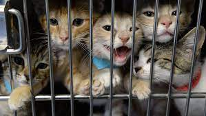

Cats have 230 bones, while humans only have 206. Cats have an extra organ that allows them to taste scents on the air, which is why your cat stares at you with her mouth open from time to time. Cats have whiskers on the backs of their front legs, as well. Cats have nearly twice the amount of neurons in their cerebral cortex as dogs. Cats have the largest eyes relative to their head size of any mammal.
Cats are believed to be the only mammals who don’t taste sweetness. Cats are nearsighted, but their peripheral vision and night vision are much better than that of humans. Cats are supposed to have 18 toes (five toes on each front paw; four toes on each back paw). Cats can jump up to six times their length.
There are many different breed of cats.WHich include Manks, Siamese, and many other breeds.A house cat’s genome is 95.6 percent tiger, and they share many behaviors with their jungle ancestors, says Layla Morgan Wilde, a cat behavior expert and the founder of Cat Wisdom 101. These behaviors include scent marking by scratching, prey play, prey stalking, pouncing, chinning, and urine marking.